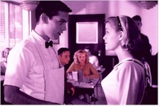
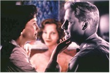
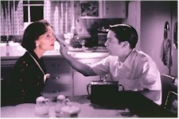
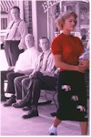

Contents | Features | Reviews | Books | Archives | Store |
 |
|
| Movie Credits | Buy It! |
Pleasantville
Review by Gregory Avery
Posted 30 October 1998
| Written and Directed by Gary Ross. Starring
Tobey Maguire, Reese Witherspoon, |
One -- no! wait! make that two people have already written that this picture will not only be an Oscar contender, but will win an award when the Academy holds its annual fish-tossing ceremony next spring. Well, I guess you can play that game if you want to, although, personally, trying to predict the outcome of the Oscars at this point is a little like trying to predict the outcome of a rainstorm while the sky is still blue. It can also start a situation where the merits of a film, however large or modest they may be, can be overshadowed by the critical bandwagon ringing its bells and blowing its whistles, loudly. Which is why you should go as quickly as you can and discover for yourself what's enjoyable in this picture before anyone says anything else about it.
"Pleasantville" is a gently humorous, reassuring black-and-white TV sitcom from the Fifties, like "Donna Reed" and "Father Knows Best" rolled into one. At its center are the Parkers, the ideal upper-middle-class suburban family, the type of characters you come to know and love. Mother Betty (Joan Allen) tends home and wears a pearl choker necklace; dad George (William H. Macy) comes home from work each day with the anthem, "Honey, I'm home!" The episodes usually end with Mom, Dad, and their two well-groomed, well-brought-up teenage kids, Bud and Mary Sue, in a four-shot, Dad holding a fresh martini. It's the kind of place you'd want to live in. It's the kind of place Americans wanted to live in. In real life, America had the Red Scare, the Cold War, the war in Korea, the Bomb, juvenile delinquency, rock-and-roll, the arms race, polio, and the beginnings of the civil rights and the feminist movement. Khrushchev had told the U.S., "We will bury you!" And, for a few days in the early 1960s, a palpable cloud hung over everyone suggesting that, maybe, he just might, with nuclear warheads aimed at everyone's Pleasantville. "Pleasantville," the TV show, has none of this.
David (Tobey Maguire), a Nineties teenager, watches the show on TV Time, a Nick-at-Nite-like channel, committing episodes and factoids to memory. Jennifer (Reese Witherspoon), his contentious sister (Witherspoon was last seen cutting a swath through L.A. in "Freeway"), plans on watching a "Pleasantville" marathon at the same time as David. David has had no luck approaching girls; Jennifer has managed to land a date with a cute boy, who's coming over. Then, suddenly, there they are, in the form of Bud and Mary Sue, inside the Parker living room in Pleasantville. Mom has made breakfast for them before they have to go to school. Pancakes, waffles, scrambled eggs, bacon, sliced ham, all topped with butter and syrup -- it's like the whole economic largesse of Fifties America after the Second World War is piled atop the Parker kitchen table.
David knows enough about the show to interact with the characters so as not to seem strange. Jennifer takes one look at the sweater-and-poodle skirt combinations on the other girls and complains that she's in "nerdville". Then, Skip Martin (Paul Walker), the high school basketball star, rides by, flashes his white teeth, clean-cut looks and dark eyes at her, and the rapacious Jennifer changes her mind. David and Jennifer have entered the show at about the time when Skip is supposed to "pin" (a.k.a. for those not in the know, give her his high school varsity pin to wear, the first step towards going-steady) Mary Sue Parker. Jennifer suggests they go up to park on Lovers Lane (where the kids are seen chastely sitting together in each car, at a discreet distance). "You can pin me any time you want," she tells him. "Or, I can pin you." Which she does. Driving home, Skip notices something out of the ordinary. In a direct homage to Michael Powell and Emeric Pressburger's A Matter of Life and Death (and the filmmakers, here, even see to achieve the same hue (as in the earlier film), Skip sees color. Up until that time, Pleasantville, just like on the TV screen, had been in nothing but creamy blacks, whites and grays.
Gary Ross, the screenwriter who wrote this film and makes his directorial debut, here, working with cinematographer John Lindley and visual F.X. persons Janek Sirrs and Michael Southard, make the most dramatically, and richly, expressive use of digital effects I've seen since Jurassic Park. They first give the setting the look and depth of a sitcom come alive, and then proceed to gradually introduce color in little, mischievous bits at a time -- the pink of a girl's bubble gum, a schoolbook, an amber comb running through a guy's hair. In the meantime, the kids sit attentively in class, perfectly dressed and behaved models of young adulthood, listening to a geography lesson which turns out to consist of going over the streets and places in Pleasantville, one at a time. There is no "outside world," because that's not the way "Pleasantville," the show, was conceived (there wasn't any need for any "elsewhere," and people who watched the show didn't want that). It is as if the town, once dreamed-up by its creators and, reinforced by episode after episode, began existing of its own, albeit self-contained, accord. The books in the library have covers but nothing on the pages. Once Jennifer tells them about "The Adventures of Huckleberry Finn," Mark Twain's story appears, like lemon juice on paper held over a flame, across the blank pages. Soon, J.D. Salinger and D.H. Lawrence appear. The town library is soon besieged by people eager to read. David takes a book about art to Mr. Johnson (Jeff Daniels), who wears a white suit and hat as he flips burgers and runs the soda fountain at the local cafe. Mr. Johnson takes pride in painting his window, every Christmas, with a new design. David shows him the colors of Cezanne, Monet, Max Ernst and Picasso. "Where can I see colors like that?" Mr. Johnson exhales, in astonishment and yearning.
David initially worries that he and Jennifer could "change their whole universe" in Pleasantville, but, as if through a sub-atomic disturbance, the changes occur, anyway. It would have been easy, and cozy, to simply spend the entirety of the movie spoofing the outmoded foibles and fallacies of the old TV family sitcoms, but Gary Ross wants to do something more than that. For one thing, he doesn't see the people of Pleasantville as cardboard cutouts, but capable of functioning on their own as human beings. Betty Parker, the epitome of what Betty Friedan first addressed in "The Feminine Mystique," asks Jennifer just what it is they do up there on Lovers Lane. (By this time, word has gotten around, and the teenagers are all happily having at it.) Jennifer, a Nineties girl, tells her. "What's 'sex'?" asks Betty, who has spent her married life in Pleasantville sleeping in separate beds. Jennifer gently sits Betty down and tells her. Later that night, Betty discovers that, yes, women can experience pleasure, and the tree outside, in front of the Parker household, bursts into flames. David summons the fire department, but they don't know how to use the equipment because there's never been a fire, before. "I always wondered how you used this thing," one of them says as David helps him operate the hose.
Joan Allen has currently been placed in the popular perspective as Respected Dramatic Actress, a little like Greer Garson, only without Garson's strawberry-blood hair and merry eyes. Fortunately, Allen hasn't gotten stodgy, and she has the ability to take us directly into the characters she's playing. After doing a poised comedic turn as Betty, she gives a remarkably expressive interpretation, as her character both emerges as a more complex person while inexorably changing from black-and-white to color, bending over her kitchen sink and acting as if she had a secret shame that everyone can immediately spot. David responds with great kindness to Betty's distress, but you gradually see her coming into her own, becoming proud and defiant without becoming unsympathetic. When David tells George, his "father," how beautiful Betty is, we can see that, aside from the color, now, she is beautiful. Allen's performance perfects the transformation inside and out.
With logical progression, though, some of the citizens of Pleasantville don't like the changes occurring to their "norm," and rally to do something about it. This is the only time the film, which has been shrewdly conceived and executed up until then, falters. The local chamber of commerce, lead by the town mayor (played wonderfully, rocking back on his heels while surveying his entrustment, by the late, great J.T. Walsh), start acting in ways that are overtly meant to resemble Fascism. A charter is drafted calling on things to be "conventional" and "non-revisionist," and people who want things to remain black-and-white start posting signs in the windows of their businesses that read... (I had an innate reaction to such signs when I lived, as a kid, in Pensacola, Florida, and I had the same innate reaction when I saw them in this picture.) But without ridiculing the town or using its naivete to make jokes at the expense of its inhabitants, Ross makes points that ring true and are simple, so much so that they can almost slip by you. You can do things in a different way, and everything will still be alright. The people of Pleasantville hungrily, joyfully embrace not only the new vistas of color (some of which, like a scene where David drives through a swirl of autumn leaves, resemble the fantastic colors of recently discovered photographs taken by the painter Degas), but the heightening and broadening of their senses.
Tobey Maguire's David is the leader-in-spite-of-himself of this revolution, and Maguire is a brave casting choice, because some studio executive probably barked, "Get someone like Matt Damon, dammit!" Maguire, last seen as the blissed-out hitchhiker at the beginning of Fear and Loathing in Las Vegas, has an almost cantilever brow, a hairpin-like scar on one cheek that he makes no attempt to hide, and eyes and a mouth that look like they aren't quite set in the right places. Yet he has eyes that can become quite bright and animate, and he moves and uses his body in ways that are expressive in ways that can be affecting, and touching. His character is the one who most changes in the course of the story, and somebody other than Maguire probably wouldn't have been able to portray that as effectively as he does.
Ross slips in one other point, one that may very likely be missed by people talking about the most obvious points of the film, and that is about barriers. With the pinging of many different tack-hammers in the form of culture and fads and the media, people have become inured and thrown up buffers between themselves and the rest of the world more so now that they probably ever did in the Fifties. When the people of Pleasantville drink in the new sights and sensations, there is a sense of openness that occurs in the picture, and the sense of sweet relief when people begin to open-up and freely and unabashedly react towards each other. This is especially apparent in a scene where David and Margaret (Marley Shelton), the girl with whom he becomes friends, sit by a park lake, and Margaret shares with him the dark, lushly-colored berries she's just collected. (She's also in the car David's driving, in the scene described above.) Ross isn't asking us to take a step backwards to the conventions and mores of the Fifties to regain this ability, but is, slyly, suggesting that we may have lost a lot of the ability to simply interact, without expecting or demanding anything from each other.
And I must say something about Don Knotts. Most people remember him either as Barney Fife in "The Andy Griffith Show," and as the goofy, jittery character he played in movies like "The Ghost and Mr. Chicken". In fact, the last time I saw him was over ten years ago, when he was reprising his goofy, jittery persona while playing a landlord in an awful TV show. What a lot of people forget is just how well he played Barney Fife, as a cocky, strutting guy who tried to convince us that he was more tough and pugnacious than he really was, a performance that commented more on male vanity and posturing than most people would probably have liked to admit. Knotts no longer has the gooney look, and his face has weathered and acquired deep, pendulous folds in it, his voice acquiring a slower, almost James Stewart-like cadence to it. His character appears mostly at the beginning, when he comes to David's aid over a (to David) catastrophic incident, and appears intermittently through the rest of the film. And he's marvelous, giving a fully-realized performance. The picture seems to have awakened the actor in Knotts much like the citizens of Pleasantville are also joyfully awakened.
Contents | Features | Reviews | Books | Archives | Store
Copyright © 1999 by Nitrate Productions, Inc. All Rights Reserved.